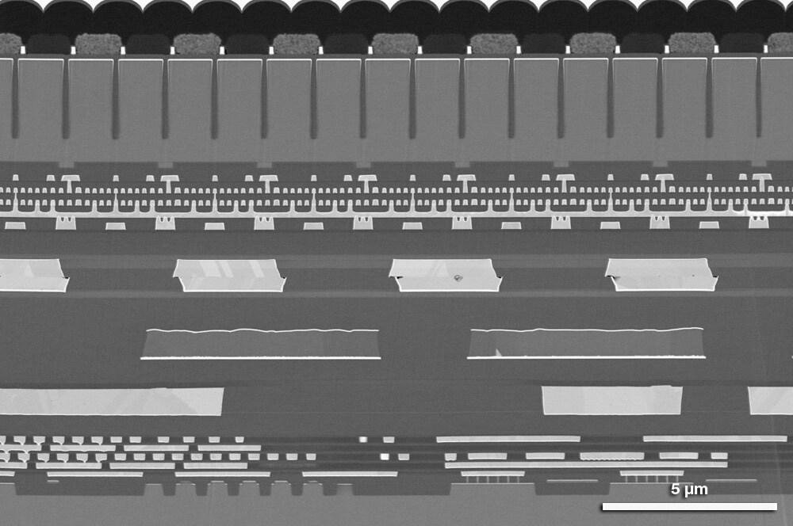
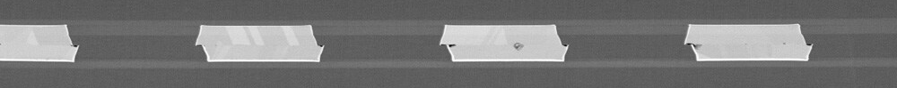
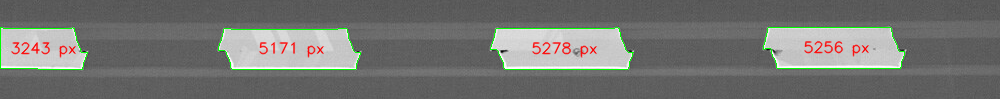

基本文法
画像データを3次元のndarrayの配列データとして扱う。
通常：「RGB」、OpenCV：「BGR」
- ライブラリの読み込み
- 画像ファイルの読み込み
- ピクセル数の確認
- 画像をグレースケールにして、2値化する。
- 画像の表示
- 画像のファイル出力。
- 画像サイズを変更する。元の画像のサイズを取得し、比で変更する。
- トリミング
- グレーカラーに変換
import cv2
import matplotlib.pyplot as plt
import numpy as np
from PIL import Image
path = r"C:\Users\taked\Desktop\ryo_勉強関連\05_python\21_画像解析\タイヤ_original_01.png"
pil_img = Image.open(path) #Pillowで画像を開く
img = np.array(pil_img) #PillowからNumpyに変換
img = cv2.cvtColor(img,cv2.COLOR_RGB2BGR) #RGBからBGRへ変換する。
print(img.shape) #例:(884,1200,3) 縦884pixel,横1200pixel,カラーの３次元配列
img_gray = cv2.cvtColor(img , cv2.COLOR_BGR2GRAY)
_ , binary = cv2.threshold(img_gray , 127 , 255 , cv2.THRESH_BINARY)
cv2.imshow("Image",img) #第一引数はタイトル、第二引数は画像データ(numpy)
cv2.waitKey(0)
cv2.imwrite("./output.png",img) #第一引数は出力先のファイルパス、第二引数に書きだしたい画像のndarrayを指定する。
h = round(img.shape[0]/2) #縦のピクセル数
w = round(img.shape[1]/2) #横のピクセル数
resize_img = cv2.resize(img,(h,w))
plt.imshow(cv2.cvtColor(resize_img, cv2.COLOR_BGR2RGB))
trim_img = img[0:120,0:500]
plt.imshow(cv2.cvtColor(trim_img,cv2.COLOR_BGR2RGB))
gray_img = cv2.cvtColor(img,cv2.COLOR_RGB2GRAY)
plt.imshow(cv2.cvtColor(gray_img,cv2.COLOR_BGR2RGB))
SEM画像の断面積測定
original画像（これを処理していく）

- ライブラリ読み込み
- 画像の読み込み
- トリミング
- ノイズ除去
- 二値化(Otsu)
- モルフォロジー処理
- 輪郭抽出
- 可視化（確認）
- 画像を保存する。
import cv2
import matplotlib.pyplot as plt
import numpy as np
from PIL import Image
画像を読み込む。cv2.imreadは日本語パス非対応なので、Pillowで読み込んで、numpyでndarray配列に変えて読み込む。
path = r"C:\Users\taked\Desktop\ryo_勉強関連\05_python\21_画像解析\半導体.jpg"
pil_img = Image.open(path).convert("L") #「.convert("L")」でグレースケール化している。
img = np.array(pil_img)
画像の測定対象物付近（上下45~60%の範囲）だけにする。
h,w = img.shape
top = 45
bottom = 60
img_resize = img[round(h/100*top):round(h/100*bottom),0:w]
img_color = cv2.cvtColor(img , cv2.COLOR_GRAY2BGR)[round(h/100*top):round(h/100*bottom),0:w] #最後の可視化で使うので、カラー画像もトリミングしておく。

ノイズを除去する。blurは「ぼかし」という意味の英単語。
blur = cv2.GaussianBlur(img, (9,9),0)
| 引数 | 意味 | 調整範囲 |
|---|---|---|
| 第二引数 | カーネルサイズ | (3,3)~(11,11) |
| 第三引数 | 自動sigma | 通常0でOK |
白と黒に分離する。
_ , thresh = cv2.threshold(blur , 0 , 255 , cv2.THRESH_BINARY + cv2.THRESH_OTSU)
もし白と黒を逆にしたい場合は、cv2.THRESH_BINARY_INVにする。
小さな穴やノイズを埋める
kernel = np.ones((5,5),np.uint8)
clean = cv2.morphologyEx(thresh,cv2.MORPH_CLOSE,kernel)
| 引数 | 意味 | 調整範囲 |
|---|---|---|
| (5,5) | 処理サイズ | (3,3):軽め補正、(5,5):穴埋め強い、(7,7):形崩れる可能性あり |
| MORPH_CLOSE | 膨張 →収縮 | 通常0でOK |
contours , _ =cv2.findContours(clean,cv2.RETR_EXTERNAL,cv2.CHAIN_APPROX_SIMPLE)
| 引数 | 意味 | 調整範囲 |
|---|---|---|
| 第二引数 | RETR_EXTERNAL | 外側だけ取得 |
| 第三引数 | CHAIN_APPROX_SIMPLE | 点を圧縮 |
# 面積テキストをカラーイメージと輪郭(contours)を重ねる。
for i , cnt , in enumerate(contours):
area = cv2.contourArea(cnt) #輪郭の面積を計算する。
if area < 500: #輪郭の面積が小さい部分を除外する。
continue
cv2.drawContours( img_color , [cnt] , -1 , (0 , 255 , 0) , 1 ) #img_color上に、輪郭([cnt])を描画する。
| 引数 | 入力例 | 説明 |
|---|---|---|
| 第3引数(描画する輪郭のインデックス。) | -1 | -1を指定すると、リストに含まれるすべての輪郭を描画する。基本-1でよい。 |
| 第4引数（輪郭のBGR） | (0,255,0) | Blue=0,Green=255,Red=0 |
| 第5引数(輪郭の太さ) | 1 | 輪郭線の太さ(ピクセル)。-1にすると内部を塗りつぶす。 |
# 重心計算（表示位置）
M = cv2.moments(cnt)
if M["m00"] != 0:
cx = int(M["m10"] / M["m00"])
cy = int(M["m01"] / M["m00"])
else:
continue
text = f"{int(area)} px"
cv2.putText(①img_color , ②text , ③(cx - 30, cy + 5 ), ④cv2.FONT_HERSHEY_SIMPLEX, ⑤0.5 , ⑥(0 , 0 , 255 ) , ⑦1 , ⑧cv2.LINE_AA)
| 引数 | 入力例 | 説明 |
|---|---|---|
| 第3引数：描画する輪郭のインデックス | (cx -30 , cy + 5 ) | テキストの左下の座標(x,y) |
| 第4引数：文字の書体（フォントタイプ） | cv2.FONT_HERSHEY_SIMPLEX | この設定は標準的なサンセリフ体 |
| 第5引数：フォントサイズ | 0.5 | フォントの大きさ |
| 第6引数：輪郭のBGR | (0,255,0) | Blue=0,Green=255,Red=0 |
| 第7引数：太さ | 1 | 文字の線の太さ |
| 第8引数：線種 | cv2.LINE_AA | アンチエイリアス（Anti-Aliased）線種。文字の輪郭が滑らかになり、綺麗に表示される。 |

cv2.imshow("Contours",img_color)
key = cv2.waitKey(0)
if key==ord("s"): #「s」のキーボードを押したときだけ、保存が実行される。
result , buf = cv2.imencode(".png",img_color)
buf.tofile(r"C:\Users\taked\Desktop\ryo_勉強関連\11_HTML_仕事関連\images\画像分析_半導体_06_可視化（確認）.png")
print("画像を保存しました。")
cv2.destroyAllWindows()